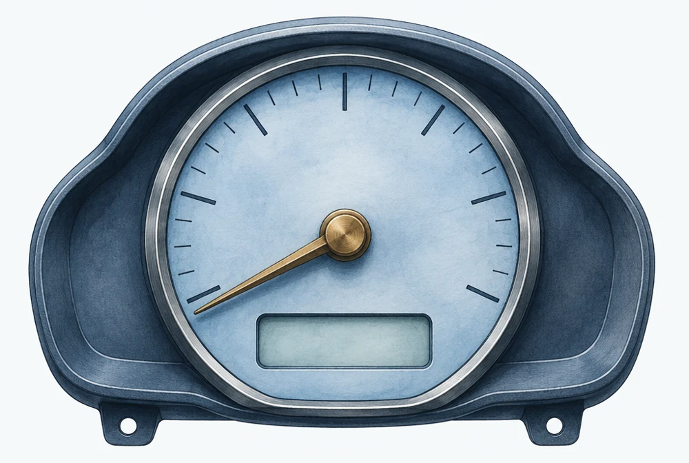

Vehicle history report
Maruti Suzuki Baleno Alpha Petrol 1.2
2022 · Petrol · Manual
HR ** ** 7428Gurugram, Haryana
- Seller’s reading
- 43,800 km
- Ownership
- First owner
- Service invoices
- 5 on record
24 Nov 2026 · VIB-SAMPLE-20261124-02
Vehicle photos
4 viewsReference photos for this model. They do not verify the fictional history shown here. Photo capture dates are unavailable.
Good condition score
Read the evidence.
Inspect before deciding.
Preset for this sample. Not a physical inspection or a guarantee.
Before you decide
Start with the service trail.
Read the dated service trail.5 invoices; latest 41,000 km.43,800 kmMatch the current owner.1 owner recorded. Compare the registration certificate.First ownerPut the asking price in context.Read the reference range with the history and an inspection.₹6,60,00002Mileage & service
Five invoices.
Read them in sequence.
Five dated invoices form the available service trail. Compare the latest record with the seller’s reading and the odometer today.
2,800 km above the last service record

Compare the declaration with the odometer and original invoices.
Service invoices5 visits
- ₹7,000
Engine oil, oil filter and general checks
Maruti Suzuki service centre · Gurugram
baleno-svc-5 - ₹6,350
Air filter, brake cleaning and fluid checks
Maruti Suzuki service centre · Gurugram
baleno-svc-4 - ₹5,700
Engine oil, oil filter and general checks
Maruti Suzuki service centre · Gurugram
baleno-svc-3 - ₹5,050
Air filter, brake cleaning and fluid checks
Maruti Suzuki service centre · Gurugram
baleno-svc-2 - ₹4,400
Engine oil, oil filter and general checks
Maruti Suzuki service centre · Gurugram
baleno-svc-1
Service invoices and seller declaration · 24 Nov 2026
03Identity & ownership
Match the car.
Then match the seller.
Read the registration certificate beside the car and the seller’s documents. Confirm the recorded ownership details.
Identity & ownership
First owner- First registered
- 8 Jul 2022
- Registration region
- Gurugram, Haryana
- Registration
- HR ** ** 7428
- Owners recorded
- 1
- Fuel / transmission
- Petrol / Manual
- Usage
- Private
- Modifications
- Not recorded
- Registration valid until
- 7 Jul 2037
Factory equipment and engine specifications have not been verified in this record set.
Registration record · 24 Nov 2026
04Finance & transfer
Check the current
finance record.
No active lender entry is shown in this record set. Compare it with the current registration certificate.
Keep the latest record beside you.
A missing active entry does not establish the vehicle’s full finance history.
- Active lender entry
- Not shown
- Loan balance / repayment
- Unavailable
Registration finance entry · 24 Nov 2026
05Insurance & repairs
Read the policy.
Inspect the car.
Read the available policy record, then inspect the car. Missing claim information is not evidence of no previous damage.
Let the inspection
fill in what records cannot.
This record set contains no claim entry. It does not establish an accident-free history or the car’s condition today.
Insurance policy
- Cover type
- Comprehensive
- Policy valid until
- 7 Jul 2027
Policy and claim record set · 24 Nov 2026
06Challans & documents
Check the entries and document dates.
Verify the current status and validity dates with the seller. These records describe the position at the report date.
Check the dates as well.
Confirm the current challan status with the seller. An empty record set is not a guarantee of no outstanding entries.
Document dates
- Registration valid until
- 7 Jul 2037
- PUC valid until
- 9 May 2027
- PUC at report date
- Within recorded validity
- Road tax
- Paid in the record
Challan and registration record set · 24 Nov 2026
07Price context
Put the history
beside the price.
Discuss the asking price with the records and a physical inspection in mind.
₹5.8–6.4 lakh
2022 Baleno · Gurugram, Haryana
A reference range for this sample, not a live valuation or an offer.
Previous asking prices
Asking prices are not completed-sale prices. Comparable sales and peer ranking are unavailable.
Reference range and listing history · 24 Nov 2026
08Available records timeline
Read the dates
together.
The available registration, service, repair and listing records, each with its own date.
First registration
Gurugram, Haryana
Service invoice
8,200 km · Engine oil, oil filter and general checks
Service invoice
16,400 km · Air filter, brake cleaning and fluid checks
Service invoice
24,600 km · Engine oil, oil filter and general checks
Service invoice
32,800 km · Air filter, brake cleaning and fluid checks
Asking price recorded
₹7,00,000
Service invoice
41,000 km · Engine oil, oil filter and general checks
Asking price recorded
₹6,60,000
Seller mileage declaration
43,800 km
Combined record set · 24 Nov 2026
Record coverage
Know what is
still missing.
Use the available records with the original documents, a physical inspection and a test drive.
- Theft / court / FIR / recalls
- Coverage unavailable
- Loan balance / repayment
- Unavailable
- Accident severity / current condition
- Not assessed
- Factory equipment / peer ranking
- Not verified
Sample report: histories, amounts and outcomes are fictional; the condition score is preset. Photos show a model-matched reference car and do not verify this history. Retrieved 24 Nov 2026; capture dates are unavailable.